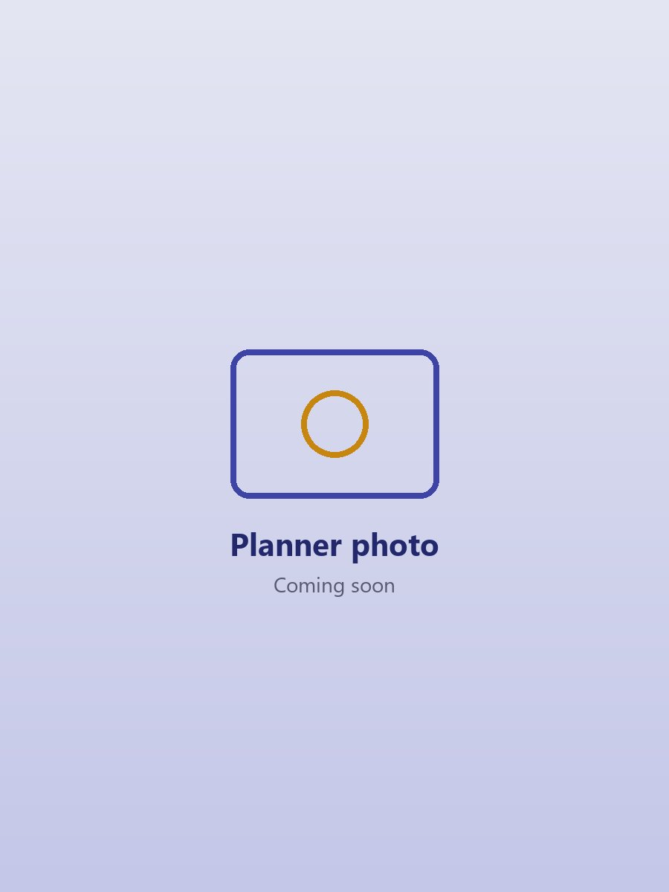

Professional Development
Where I am now, and where I am going.
I want to keep growing so that I can empower my learners and my community.
For All

Skills I Am Developing
The skills I am building as a Social Studies student teacher.
Current Focus
Plan with Purpose
Writing lesson plans with a clear aim for every lesson.
Teach for Understanding
Using activities and discussion so learners understand, not just memorise.
Reflect to Improve
Looking back after every lesson to see what to change.
Confident Learners
Building a classroom where every learner feels confident and curious.
Recent Learning & Progress
School Observation
Observed JHS 2 at ANYAA M/A 2 Basic School under my mentor Richard Ayitey, 20th October – 4th November 2026.
Teaching Principles
Set out my three principles: plan with purpose, teach for understanding, and reflect to improve.
Teaching Portfolio
Bringing my observation records and reflections together in this e-portfolio.
Career Goals
My short-term and long-term career goals
My Growth Mindset
Plan with purpose, teach for understanding, and reflect to improve.
Education Foundation
B.Ed (Social Studies)
University of Ghana, Legon
My B.Ed gives me the knowledge and methods to teach Social Studies well.